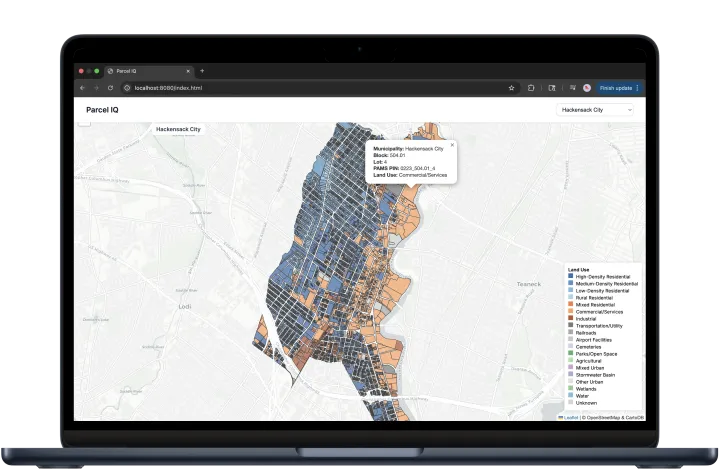
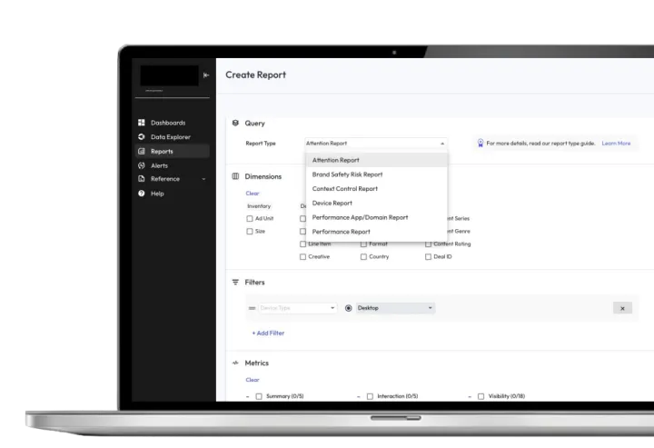
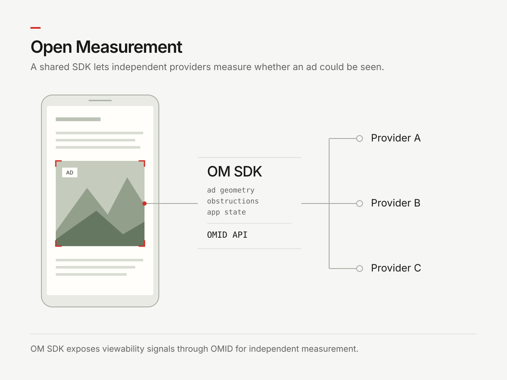
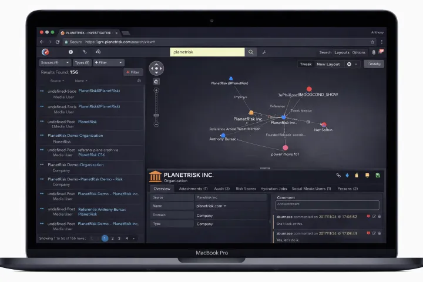
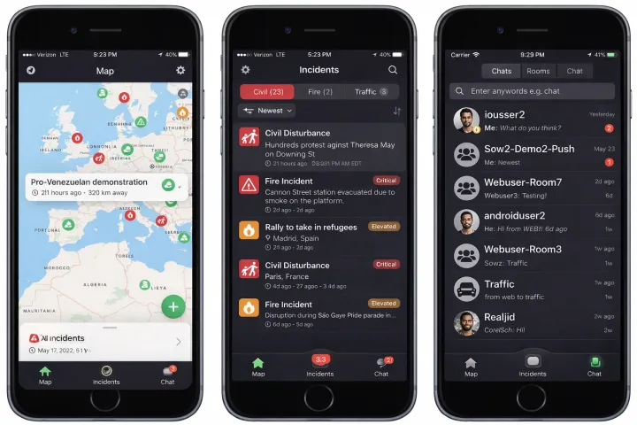
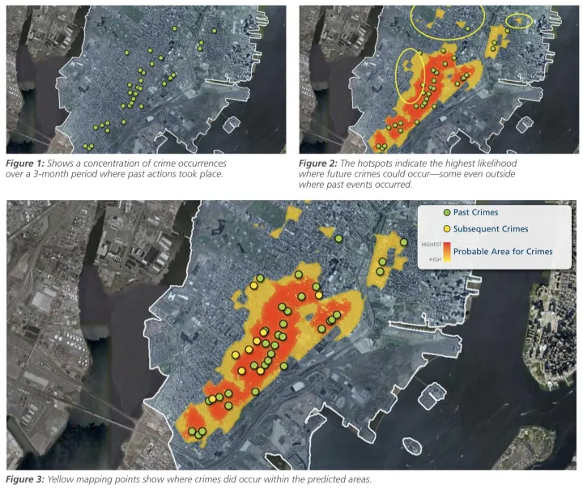
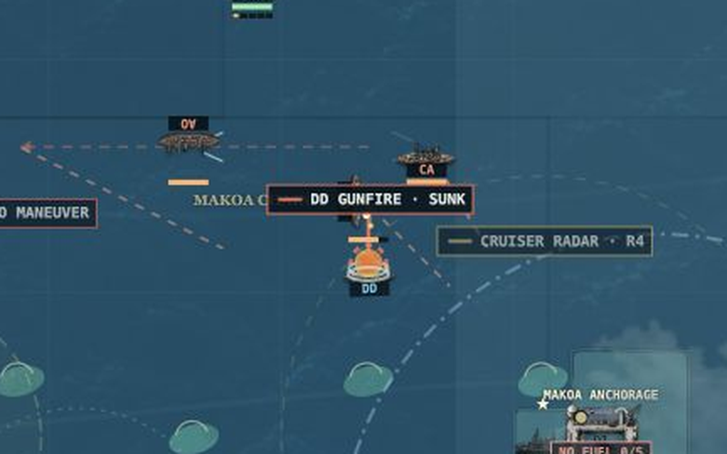

Property Intelligence
A prototype that brings property records together at the parcel level, making them easier to explore in one place. The work included building the application and its underlying data model.
Products I’ve helped build at work, and things I’m building on my own.

Clearer reporting helped publishers make better use of ad measurement, with expanded support for streaming and attention metrics. The work contributed to a 72% customer win rate in 2024.

Expanding OM SDK across mobile app inventory enabled independent providers to measure ad viewability through a shared standard. IAB Tech Lab later quoted me on its expansion to connected TV.

This application brought separate datasets, networks, and maps into one view, helping analysts explore connections between people, places, and events. The work focused on connecting graph analysis with geographic context.

PlanetRisk Mobile brought location-based alerts and information from public sources to a phone. It let people follow developing situations while away from their desks.

Geographic risk models combined behavioral and environmental data to help teams anticipate threats. The work supported earlier planning by showing where risks might develop.

A prototype that brings property records together at the parcel level, making them easier to explore in one place. The work included building the application and its underlying data model.

A naval strategy game I’m making for fun. You command a fleet, capture ports, and keep your ships supplied.